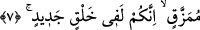

bilen) Allah’ı tevhîd, iki dünyada izzete, Hakk’a yakınlığa, vuslata ve ayn makamında
rü’yete ulaşmanın yoludur. Aynı şekilde inkâr ve yalanlama ise hem dünyada hem de
âhirette yerilmenin, zillete düşmenin Hak’tan uzaklığın, kovulmanın, hâzır/uyanık
kalblerin ve Hakk’a nazar eden yüzlerin gördüklerinden perdelenme sebebidir.
Büyüklerden birisi (Necmeddîn Dâye) şöyle demiştir: Allah Teâlâ bu (beşinci)
âyetle bazı filozoflara işâret etmektedir ki onlar şöyle diyorlardı: “Muhammed (s.a.)
Arap hakîmlerinden bir hakîm idi. Bu nâmûs-i ekberi ortaya koydu.” Onlar “nâmûs-i
ekber” sözü ile peygamberliği ve şeriatı kasdediyorlardı. Kur’ân’ın O’nun sözü
olduğunu ve O’nun tarafından söylendiğini iddiâ ediyorlardı. Onlar bu ifâde ettikleri ile
hakkı iptal edip ortadan kaldırma ve bâtılı ispat sadedinde tam bir gayret içinde
uğraşıyorlardı. Bu kimseler için kovulmanın ve uzaklaştırılmanın en kötüsü vardır.
Çünkü peygamberliği karalamak diğer hususları karalamak gibi değildir.
Tekrar ve araştırma yoluyla insanlar tarafından değil de Allah tarafından mevhibe
olarak kendilerine ilim verilenlere gelince, onlar nübüvvet, Kur’an ve hikmetin Allah
tarafından hak ve gerçek olduğunu bilirler. Bunlar Hak Teâlâ tarafından kendilerine
verilen ilmin nuruyla baktıkları için bu gerçekliği görürler. Çünkü hak ancak hak ile
görülür. Nitekim nur da ancak nur ile görülür. İşte hak hak ile görülünce, hak, hak ehline
ve hak taliplerine hak yolu gösterir/hidâyet eder. “O’nun, mutlak galip ve övgüye lâyık
olan (Allah’ın) yoluna ilettiğini görürler.” ifâdesi de bunu anlatmaktadır. O
Azîz/mutlak gâlibdir, çünkü O ancak O’nunla ve O’nun hidayet edip yol göstermesiyle
bulunur. O Hamîd’dir/övgüye lâyıktır, çünkü matlubunu bulmadan tâlibi geri çevirmez.
Nitekim O kudsî bir hadîste şöyle buyurmuştur: “Bilesiniz ki beni arayan beni bulur.”
Musa (a.s.) “Ya Rab! Seni nerede bulurum? dedi. Allah Teâlâ “Ey Musa! Beni
kasdettiğin/bana yöneldiğin zaman bana ulaşmış olursun.”[6]
Molla Câmî der ki:
Gönül levhasında Hak’tan gayrı ne varsa sil at
Halktan geç, tamamen Hak ile ol
Himmet yükünü can ülkesine götür
Gayrin yüzüne nisyan çizgisi çek
Hevâ ve hevesten gönlünü kopar
Gönül yüzünü Hakk’a döndür, yeter
7. Kâfir olanlar (kendi aralarında) şöyle dediler: “Çürüyüp paramparça